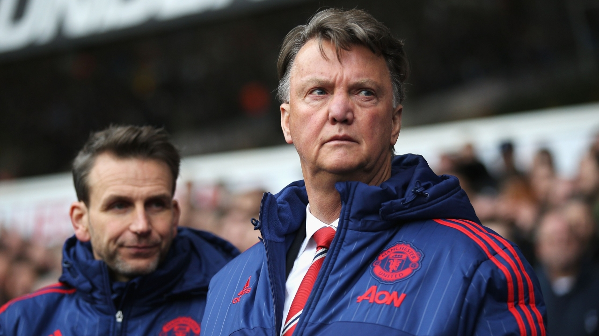
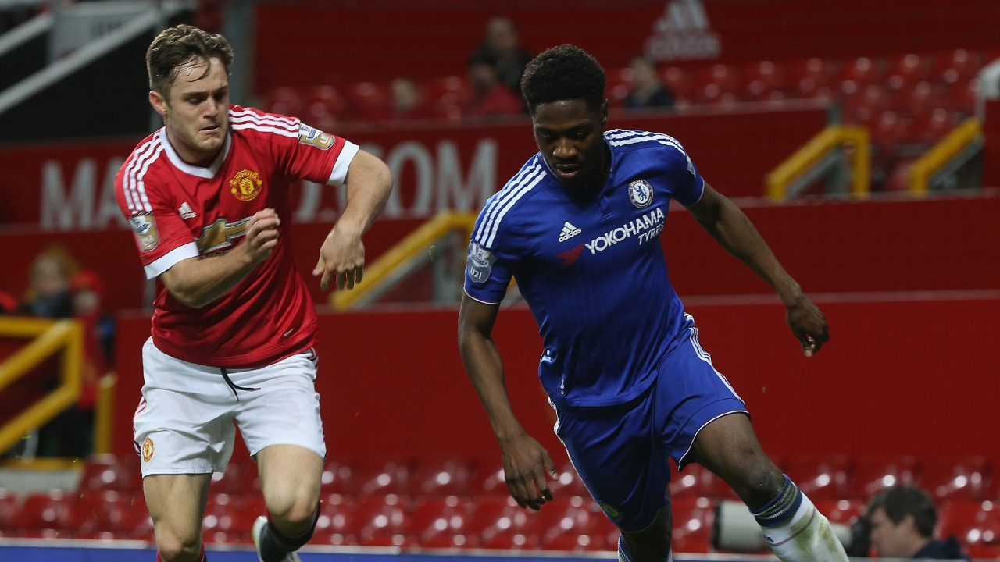
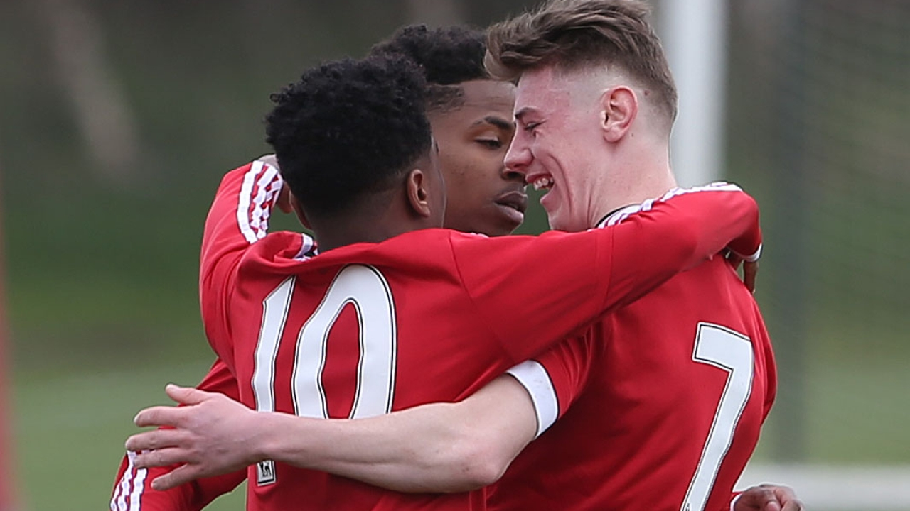
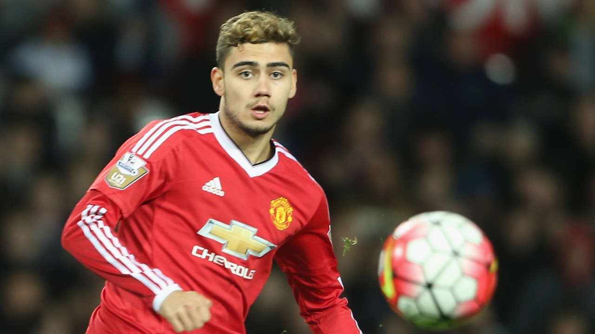

VAN GAAL REACTS TO TOTTENHAM DEFEAT
Manchester United were beaten 3-0 by Tottenham Hotspur on Sunday - conceding three goals in six second-half minutes - and Louis van Gaal was bitterly disappointed by the result. Here is what he had to say in his post-match interviews with Sky Sports and MUTV...

RILEY: U21S MUST PROVE WINNING MENTALITY
Joe Riley says Manchester United Reserves coach Warren Joyce has told his Under-21 squad they need to prove they are winners...

UNDER-18S: MANCHESTER UNITED 7 NEWCASTLE 1
Manchester United’s Under-18s swept to easily their biggest win of the season at the Aon Training Complex on Saturday against a plucky and hard-working Newcastle United side...

U21S: MANCHESTER UNITED V MIDDLESBROUGH
Get ready for another exciting fixture as Manchester United host Middlesbrough in a vital match in the quest to retain the Under-21 Premier League title - the final home fixture of the season for Warren Joyce's young Reds team...